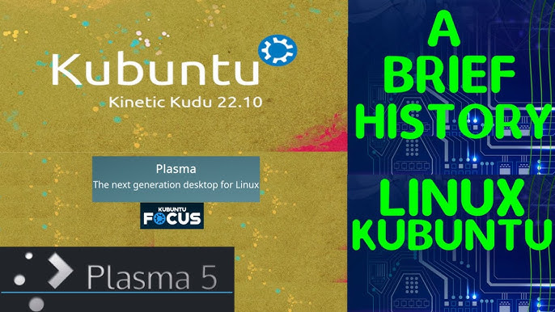

Historia del Sistema Operativo
Kubuntu es una distribución de Linux basada en Ubuntu, lanzada por primera vez en 2005. Su objetivo es ofrecer una experiencia de escritorio basada en KDE Plasma, un entorno gráfico robusto y altamente personalizable.

Instalación y Configuración
Mira nuestro video tutorial de instalación y optimización de Kubuntu
Sitios de Interés
¿Por qué instalar Kubuntu?
Kubuntu ofrece un entorno gráfico intuitivo y altamente configurable, además de estar respaldado por una comunidad activa de desarrolladores. Es una excelente opción para usuarios que buscan un sistema operativo moderno, ligero y flexible.
Comentarios y Autores
Comentarios recientes:
Autores:
Adrian Guzman - adrianguzmanch123@gmail.com - Universidad de Nariño
Sebastian - - Universidad de Nariño